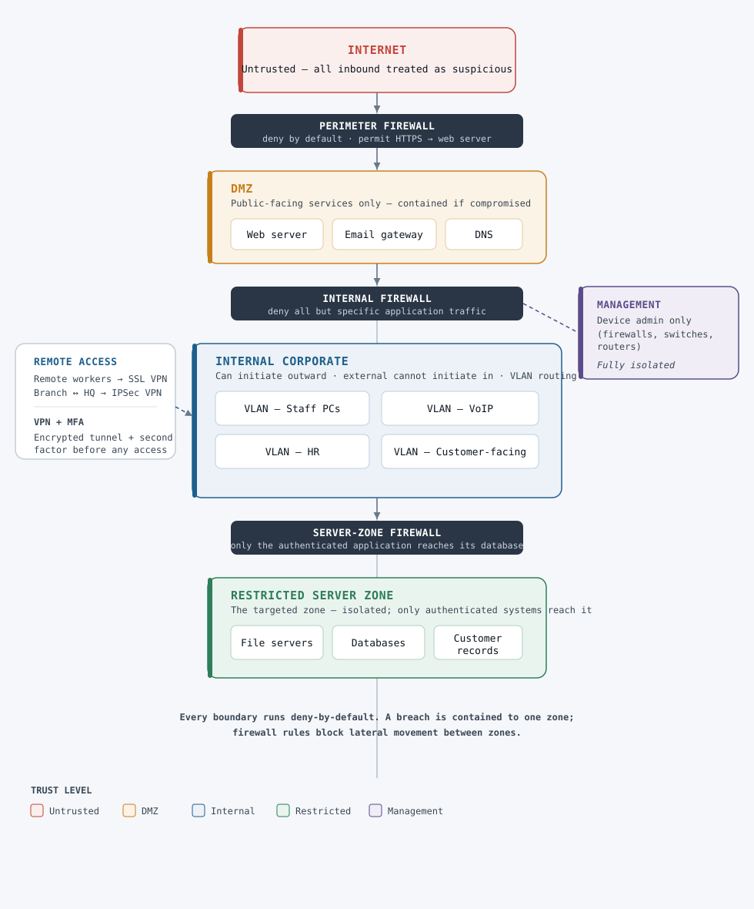

01 — The Challenge
A flat network with implicit trust
Write the breach story here, in your own words, adapted from your A1.
Aim for 2–4 sentences: what happened (unauthorised access + ransom),
and the root cause (flat network — once inside, the attacker could reach everything).
Keep it framed as the problem a reader would recognise, not a list of facts.
02 — The Approach
Four layers of analysis
A short framing paragraph in your words: the four areas you analysed and why,
together, they form a defence-in-depth posture. Adapt from your A1 introduction.
Protocols & devices
Your summary of Part 1 — the security role of routers, switches,
firewalls, and the move to secure protocols (TLS, HTTPS, SSH, DNSSEC/DoH). Keep it tight.
Principles & tools
Your summary of Part 2 — defence in depth, least privilege,
segmentation; firewalls, IDS/IPS, encryption, SIEM, EDR.
Identity & access management
Your summary of Part 3 — why identity is the new perimeter,
and your phased implementation plan (MFA → RBAC → SSO → PAM → access reviews).
Secure architecture
Your summary of Part 4 — segmented zones, firewall boundaries,
VLANs, VPN + MFA for remote access.
03 — Key Design Decisions
The reasoning that matters
This is the section a hiring manager or client reads most closely — it shows you can think, not just list. Replace each placeholder with your own reasoning.
Decision 1 — e.g. why segmentation contains the blast radius.
Your reasoning.
Decision 2 — e.g. why MFA was the single highest-impact control.
Your reasoning.
Decision 3 — your call. Pick the decision you can defend best.
04 — Architecture
Segmented, layered, deny-by-default
INTERNETUntrusted — all inbound traffic treated as suspicious.
DMZPublic-facing services only. A compromise is contained here.
INTERNALStaff PCs and apps. Can reach out; external cannot initiate in.
RESTRICTEDFile servers, databases, customer records. The targeted zone — isolated.
MANAGEMENTDevice administration only. Fully isolated from user traffic.

Each boundary runs deny-by-default; only explicitly permitted traffic passes between zones.
05 — Why This Design Is Better
From implicit trust to verified access
Your closing argument, adapted from your A1 conclusion: how the segmented design
reduces attack surface, blocks lateral movement, secures remote access, and adds
visibility — replacing the single point of failure that enabled the breach.
Skills demonstrated
- Network segmentation & trust-zone design
- Defence in depth
- Identity & access management / zero-trust direction
- Firewall, IDS/IPS and encryption selection
- Secure remote access (VPN + MFA)